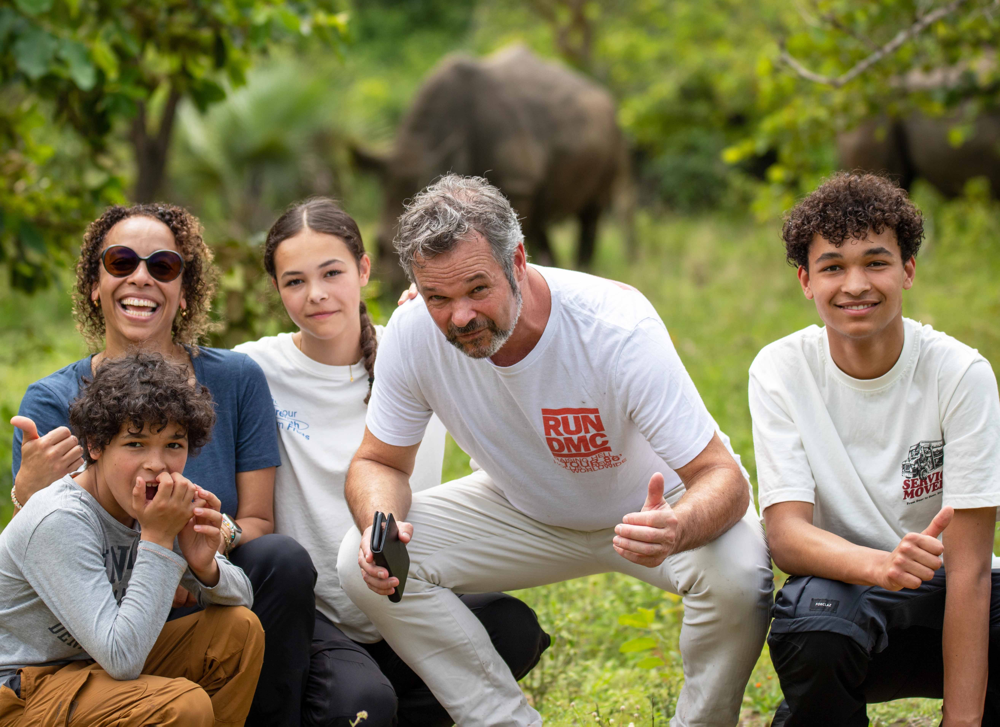
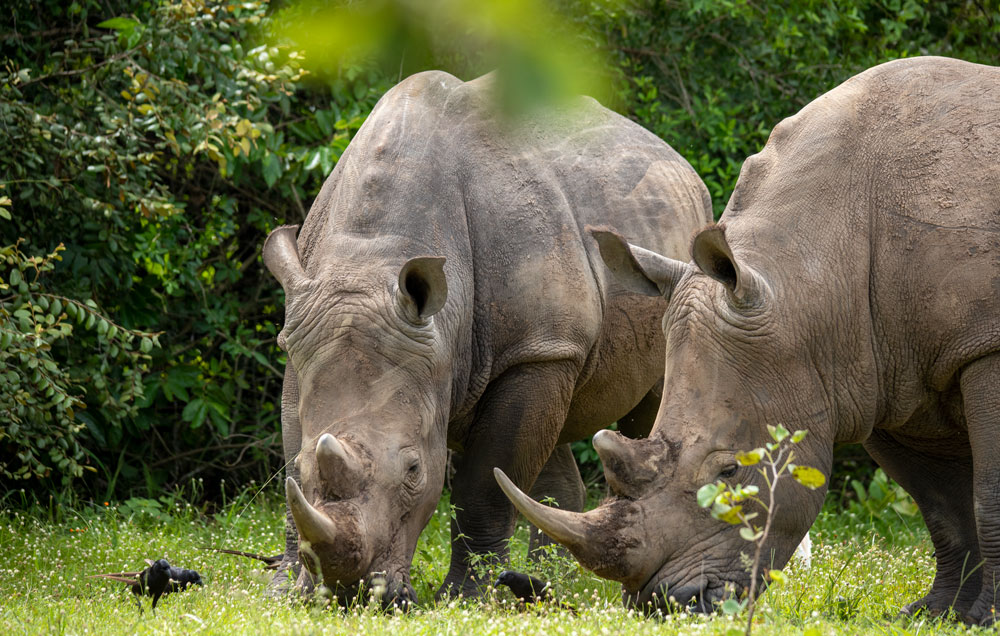
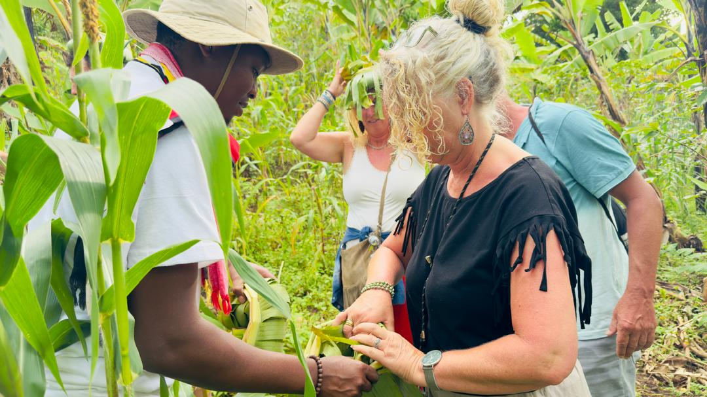
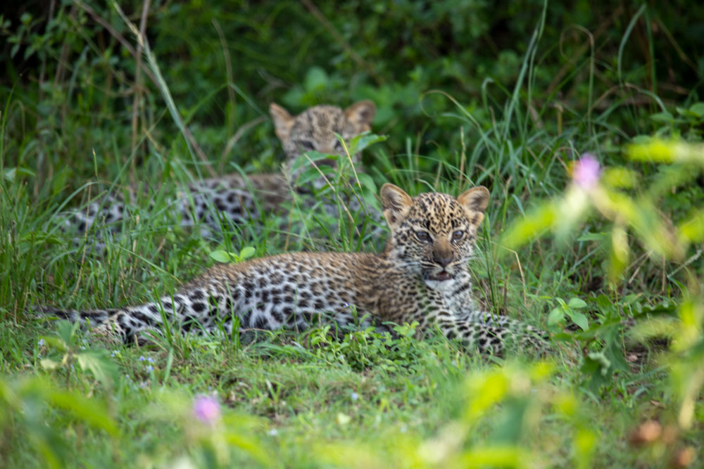
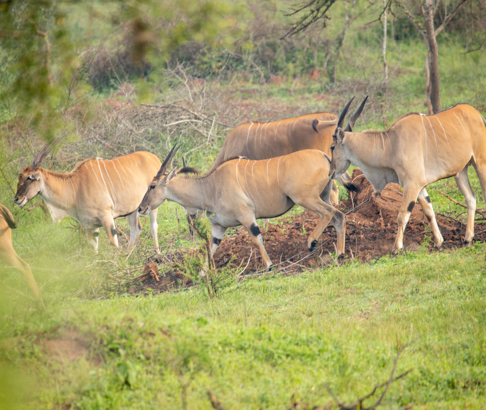

8-Day Uganda Wildlife & Primates Adventure
Overview
Discover the untamed beauty of Uganda on this immersive 8-day journey through the country’s most iconic
wildlife and primate habitats. Beginning in Kampala, your adventure leads you to Ziwa Rhino Sanctuary—Uganda’s
only place to track wild rhinos on foot—before plunging into the dramatic landscapes of Murchison Falls
National Park, where you’ll cruise the Nile to the base of the thundering falls, spot lions and elephants
on game drives, and even enjoy a rare night safari.
Journey westward to the misty fringes of Budongo Forest,
home to one of East Africa’s densest chimpanzee populations, for an unforgettable morning of primate tracking.
Continue through the scenic crater lake region to Queen Elizabeth National Park, where a Kazinga Channel
boat cruise offers up-close encounters with hippos, elephants, and hundreds of bird species.
The safari
culminates in Lake Mburo National Park, Uganda’s only park offering guided walking safaris among zebras,
elands, and giraffes. Perfect for wildlife enthusiasts, first-time visitors, and primate lovers alike,
this action-packed itinerary blends conservation, adventure, and authentic East African wilderness into
one seamless, unforgettable experience.

Day 1
Kampala ➝ Ziwa Rhino Sanctuary.
Depart Kampala in the morning and drive to Ziwa Rhino Sanctuary.
Check in and relax at the lodge.
Evening Rhino Tracking experience with professional rangers.
Dinner and overnight at Ziwa Rhino Sanctuary Lodge.

Day 2
Ziwa ➝ Murchison Falls National Park.
Early breakfast and start the drive to Murchison Falls National Park.
Proceed to Budongo Forest for Chimpanzee Tracking.
Lunch at Budongo Eco Site Restaurant.
After lunch, drive to the Top of the Falls for a scenic hike and photo moments.
Continue to Pakuba Safari Lodge for check-in.
Evening relaxation, dinner, and overnight at Pakuba Safari Lodge.

Day 3
Murchison Falls National Park.
Morning Game Drive in the northern sector with chances of seeing lions, elephants, giraffes, buffaloes, and more.
Return to the lodge for lunch and relaxation (optional swimming).
Afternoon Boat Trip to the Bottom of the Falls.
Evening Night Game Drive for nocturnal wildlife sightings.
Dinner and overnight at Pakuba Safari Lodge.

Day 4
Murchison ➝ Lake Nkuruba
Breakfast and checkout.
Transfer to Lake Nkuruba, a beautiful crater lake region in western Uganda.
Visit the crater lakes and enjoy a scenic nature walk.
Dinner and overnight at Lake Nkuruba Nature Reserve & Community Campsite or similar.

Day 5
Lake Nkuruba ➝ Queen Elizabeth National Park.
Morning walk around the crater lake.
Breakfast and checkout.
Drive to Queen Elizabeth National Park.
Enjoy views of the Rwenzori Mountains and wildlife along the way.
Lunch, dinner, and overnight at The Bush Lodge.

Day 6
Queen Elizabeth National Park.
Morning Game Drive in Kasenyi plains for lions, elephants, and more.
Return for lunch and rest.
Afternoon Boat Cruise on the Kazinga Channel, famous for hippos, buffaloes, elephants, and abundant birdlife.
Dinner and overnight at The Bush Lodge.

Day 7
Queen Elizabeth ➝ Lake Mburo National Park.
After breakfast, drive to Lake Mburo National Park.
Check in and relax.
Evening Walking Safari with an armed ranger—zebras, impalas, elands, topis, and more.
Dinner and overnight at Hyena Hill Lodge.

Day 8
Lake Mburo ➝ Kampala / Entebbe Airport.
Early morning Game Drive.
Continue with the drive back to Kampala or Entebbe International Airport for your departure.
Things to pack when coming for Safari.
- Waterproof Hiking Shoes.
- Long cotton socks.
- Face masks.
- Gardening gloves.
- Long-sleeved Shirts & Sunscreen.
- A Hat & a Rain jacket.
- Light backpack & Insect repellents.
- A Camera & a Pair of Binoculars.
- Drinking water bottle and Energy giving snacks.
Inclusions
- A professional driver/guide
- All transportation (Unless labeled as optional)
- All Taxes/VAT.
- Meals (As specified in the day-by-day section).
- Those searching for photographic safaris in Uganda.
Exclusions
- International flights (From/to home).
- Additional accommodation before and at the end of the tour.
- Tips (Tipping guideline US$10.00 pp per day).
- Personal items (Souvenirs, travel insurance, visa fees, etc.).
- Government imposed increase of taxes and/or park fees.